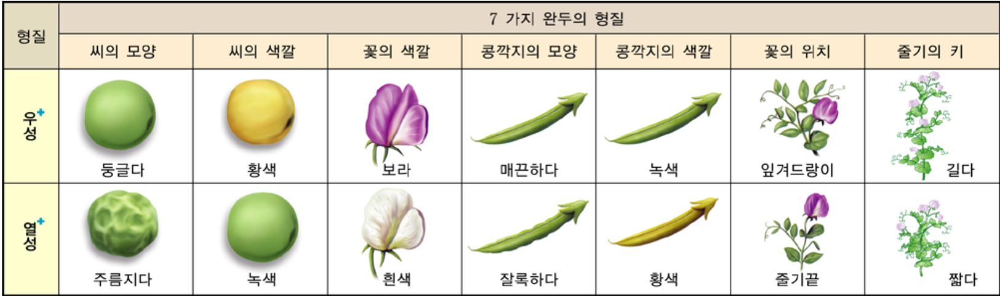
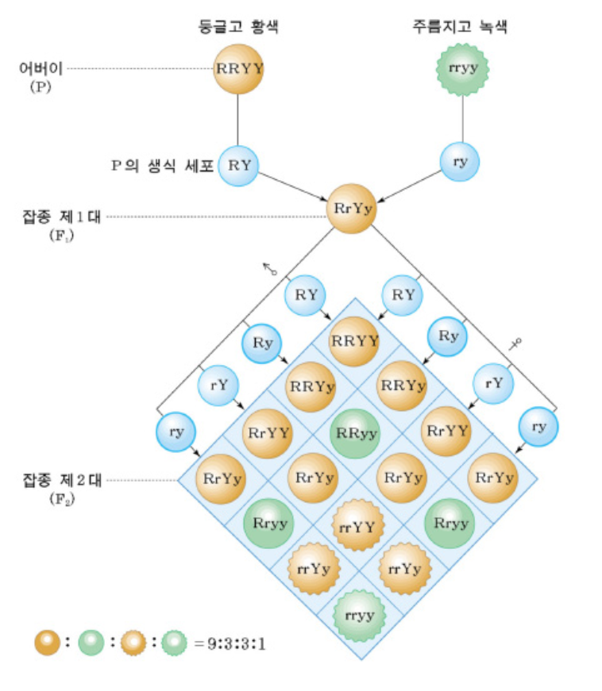

멘델의 유전 법칙
BIOBYTE
작성자:11321 김도연
11323 김혜민
11330 조은세
정의
부모의 형질이 자손에게 전해지는 유전 현상에 관한 법칙- 우열의 법칙: 자손이 부모의 형질을 반반 닮는 것이 아니라 두 부모의 형질 중 우성 형질만이 표현되는 것.
- 분리의 법칙: 생식세포를 만드는 과정에서 한 쌍의 대립 유전자가 분리되어 서로 다른 생식세포로 들어가는 현상
- 독립의 법칙 : 유전되는 두 쌍 이상의 대립 형질이 서로 간섭하지 않고 우열의 법칙과 분리의 법칙에 따라 독립적으로 유전된다.
멘델의 완두콩 실험
- 멘델이 완두를 이용한 체계적인 실험으로 유전의 원리를 최초로 밝힌 실험
- 멘델은 완두콩을 오랫동안 자가수분하여 고정된 순종을 얻고, 일곱가지 대립형질을 선택하여 이를 잡종 교배할 경우 자식 세대에 발현되는 형질은 어떻게 되는지 관찰했음
- 한 세대가 짧다 => 단시간에 여러 세대 관찰이 가능하다
- 한번에 얻는 자손의 수가 많다
- 재배하기가 쉽다
- 자가수분과 타가수분 둘다 가능하다
- 뚜렷한 대립 형질을 가지고 있다

두 쌍의 대립 형질의 유전 현상

→ 서로 다른 2가지 형질을 지닌 순종 완두콩(어버이 - RRYY, rryy)을 교배하여 우성형질을 지닌 잡종 완두콩(잡종 1세대 - RrYy)을 재배한 후, 자가수분을 하여 나온 잡종2대 완두콩의 형질을 나타낸 그림.
잡종2대 완두콩에서는 각 형질의 우성과 열성의 비율이 3:1이다.
잡종 1세대를 자가수분한 잡종 2대에서의 표현형의 비
(둥글고 황색 : 둥글고 초록색 : 주름지고 황색 : 주름지고 초록색)
= (9 : 3 : 3 : 1)
법칙의 예외
중간유전: 열성과 우성을 간에 우열 관계가 불완전해 잡종 중에 중간 형질이 발현되는 것을 의미한다.EX) 분꽃 교배
분꽃의 (표현형)형질 : 빨간색(RR), 하얀색(WW)
→ 이 두 형질 사이에 우열관계가 없어 잡종은 분홍색(RW)을 띠게 된다.
멘델 이후의 유전 연구
서턴의 염색체설: 멘델이 가정한 유전 인자인 유전자가 염색체에 있으며, 염색체를 통해 자손에게 전달됨을 발견했다모건의 유전자설: 초파리의 형질을 연구하여 대립 유전자는 상동 염색체의 같은 위치에 존재함을 발견
용어 정리
표현형: 개체에서 드러나는 형질유전자형: 종의 특성을 나타내는 형질
순종: 자가교배를 하였을 때 부모와 같은 종류의 형질만 나오는 개체(=RR)
혼성화: 서로 형질이 다른 두 순종을 교배하는 것
잡종: 혼성화 결과 나오는 개체로, 부모와 다른 종류의 형질이 나오기도 한다.(=Rr)
우성: 잡종에서 드러나는 형질. 유전자형이 Rr이라고 하면 R이 우성이다.
열성: 잡종에서 감춰지는 형질. 유전자형이 Rr이라고 하면 r이 열성이며 이는 나타나지 않는다.
잡종1대: 순종의 개체 끼리 교배한 결과 얻은 자손
잡종2대: 잡종1대를 자가교배한 이후 나온 개체
참고자료
https://ko.wikipedia.org/wiki/%EB%A9%98%EB%8D%B8%EC%9D%98_%EC%9C%A0%EC%A0%84%EB%B2%95%EC%B9%99 (위키백과)
https://www.dongascience.com/news.php?idx=41870
https://terms.naver.com/entry.naver?docId=5646887&cid=62861&categoryId=62861
9학년 과학 교과서 및 교재